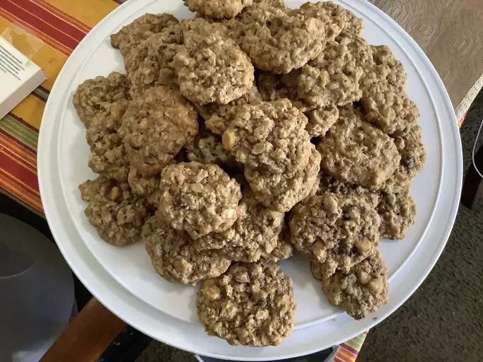

Oatmeal Cookies

Photo by Allrecipes Member
About the meal
These oatmeal cookies are better for you than the average cookie. Whole wheat flour, peanut butter chips, chocolate chips, cinnamon, and nutmeg also give them more flavor. If you like oatmeal cookies, I urge you to try these!!
Ingredients
- 1¾ cup butter, softened
- ½ cup white sugar
- 1 cup packed brown sugar
- 2 egg whites
- 1 egg
- 1 teaspoon vanilla extract
- 1 ½ cups whole wheat flour
- 1 teaspoon baking soda
- 1 teaspoon ground cinnamon
- ⅛ teaspoon ground nutmeg
- ½ teaspoon salt
- 3 cups quick-cooking oats
- ½ cup peanut butter chips
- ½ cup semisweet chocolate chips
Steps
- Preheat oven to 350 degrees F (175 degrees C).
- In a large bowl, cream together the butter, white sugar, and brown sugar until light and fluffy. Add the egg whites and egg one at a time, beating well with each addition, then stir in the vanilla. Combine the flour, baking soda, cinnamon, nutmeg and salt; gradually stir into the creamed mixture. Then stir in the quick oats, peanut butter chips and chocolate chips. Drop by rounded spoonfuls onto an ungreased cookie sheet.
- Bake for 8 to 10 minutes in the preheated oven. Allow cookies to cool on baking sheet for 5 minutes before removing to a wire rack to cool completely.
- Enjoy!
Recipe by Heather, thanks Heather!
Home